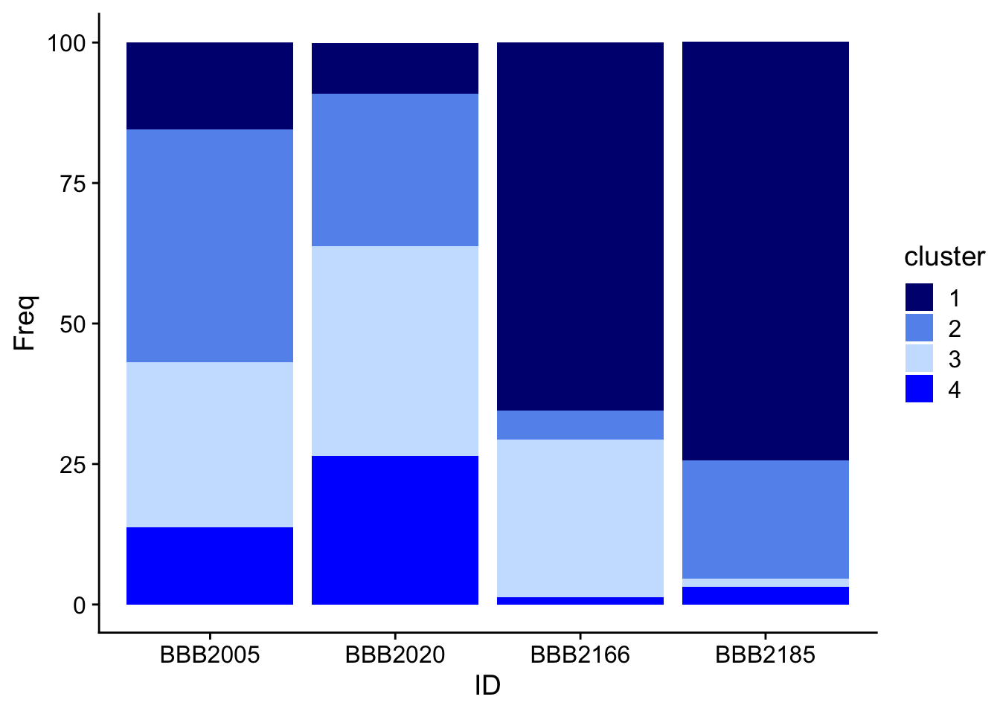
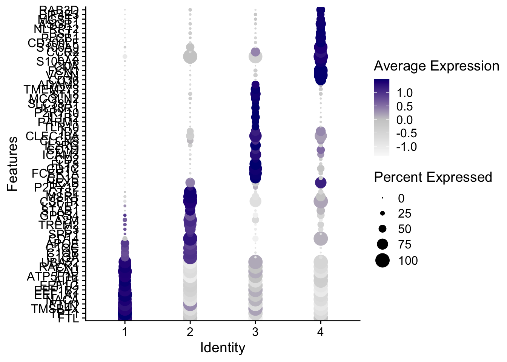

An object of class Seurat
38606 features across 7415 samples within 2 assays
Active assay: RNA (36606 features, 2000 variable features)
9 layers present: counts.BBB2005, counts.BBB2020, counts.BBB2166, counts.BBB2185, data.BBB2005, data.BBB2020, data.BBB2166, data.BBB2185, scale.data
1 other assay present: mnn.reconstructed
4 dimensional reductions calculated: pca, umap.unintegrated, mnn, umap.mnn7.Myeloid Subclustering
Subcluster myeloid cells and annotate
Subset Myeloid cells, recluster, and normalize
Myeloid <- subset(FinalFilter, cell_types=="Myeloid")
DefaultAssay(Myeloid) <- "RNA"
Myeloid <- FindVariableFeatures(Myeloid)
Myeloid <- RunPCA(Myeloid)
Myeloid <- RunUMAP(Myeloid, reduction = "pca", dims=1:50)
Myeloid <- FindNeighbors(Myeloid, reduction = "pca", dims = 1:50)
Myeloid <- FindClusters(Myeloid, resolution = 0.5)Modularity Optimizer version 1.3.0 by Ludo Waltman and Nees Jan van Eck
Number of nodes: 1079
Number of edges: 57988
Running Louvain algorithm...
Maximum modularity in 10 random starts: 0.7990
Number of communities: 5
Elapsed time: 0 secondstable(Idents(Myeloid))
0 1 2 3 4
326 314 211 154 74 Myeloid$seurat_clusters[Myeloid$seurat_clusters == "0"] <- "1"
Myeloid$seurat_clusters <- droplevels(Myeloid$seurat_clusters)
Idents(Myeloid) <- Myeloid$seurat_clusters
DimPlot(Myeloid, reduction = "umap", cols = c("navy", "cornflowerblue","lightsteelblue1","blue"))
ggsave("plots/4.myeloid/umap_blue.svg", width = 6, height = 5)
save(Myeloid, file = "data/7.Myeloid.rda")Cluster Abundunce across samples
table(Myeloid$seurat_clusters, Myeloid$ID)
BBB2005 BBB2020 BBB2166 BBB2185
1 9 15 154 462
2 24 45 12 130
3 17 62 66 9
4 8 44 3 19tmp <-table(Myeloid$seurat_clusters, Myeloid$ID)
round(prop.table(tmp, margin = 2)*100,1)
BBB2005 BBB2020 BBB2166 BBB2185
1 15.5 9.0 65.5 74.5
2 41.4 27.1 5.1 21.0
3 29.3 37.3 28.1 1.5
4 13.8 26.5 1.3 3.1abundance <- as.data.frame(round(prop.table(tmp, margin = 2)*100,1))
colnames(abundance) <- c("cluster", "ID", "Freq")
ggplot(abundance, aes(fill=cluster, y=Freq, x=ID)) +
geom_bar(position="stack", stat="identity") + theme_cowplot() +
scale_fill_manual(values = c("navy", "cornflowerblue","lightsteelblue1","blue"))
ggsave("plots/4.myeloid/Myel_abundance_blue.svg", width = 6, height = 5)Myeloid <- JoinLayers(Myeloid)
Idents(Myeloid) <- Myeloid$seurat_clusters
table(Idents(Myeloid))
1 2 3 4
640 211 154 74 `%notin%` <- Negate(`%in%`)
L <- rownames(Myeloid)[(grepl("^RPL", rownames(Myeloid)))]
S <- rownames(Myeloid)[(grepl("^RPS", rownames(Myeloid)))]
M <- rownames(Myeloid)[(grepl("MT-", rownames(Myeloid)))]
remove <- c(L,S,M)
tmp <- Myeloid[rownames(Myeloid) %notin% remove, ]Warning: Layer counts isn't present in the assay object; returning NULLdim(Myeloid)[1] 36606 1079rm(L,M,S,remove)Identify cluster markers for myeloid subsets
cluster_markers <- FindAllMarkers(Myeloid,
logfc.threshold = 0.5,
test.use = "roc",
min.pct = 0.25,
only.pos = TRUE)Calculating cluster 1Calculating cluster 2Calculating cluster 3Calculating cluster 4table(cluster_markers$cluster, dnn = "roc")roc
1 2 3 4
327 2000 1022 2003 write.csv(cluster_markers, file = "writes/Myeloid_cluster_markers_roc.csv")Myeloid Cell Type Heatmap
c1 <- c("FTL","TPT1","TMSB4X","FTH1","NACA","EEF1A1","EEF1B2","EEF1G","AIF1","ATP5F1E", "FAU", "RACK1", "UBA52")
c2 <- c("C1QA", "C1QB", "C1QC", "APOE", "CD14", "SPP1", "C3", "TREM2", "A2M", "GPR34", "STAB1", "LYVE1", "CSF1R", "MSR1", "CTSL", "P2RY12", "HEXB")
c3 <- c("CD1E", "FCER1A", "CD1C", "FLT3", "CD2", "ICAM3", "CD1D", "IL2RG", "CLCN5", "CLEC10A", "ID2", "TLR10", "PARM1", "IL1R2", "P2RY10", "IL18R1", "SLC38A1", "MCOLN2", "ST18", "TMEM273", "ADAM8")
c4 <- c("CD36","VCAN", "FCN1", "CDA", "S100A8", "LYZ", "CCR2", "S100A9", "CD300LF", "PLCB1", "BST1", "NLRP12", "ASGR1", "MGST1", "EIF4E3", "RAB3D")
# label expression as z-score expression
DotPlot(Myeloid, features = c(c1, c2, c3, c4)) + coord_flip() +
scale_color_gradient2(
low = "white",
mid = "grey80",
high = "navy",
midpoint = 0)Warning: Scaling data with a low number of groups may produce misleading
resultsScale for colour is already present.
Adding another scale for colour, which will replace the existing scale.
ggsave("plots/4.myeloid/Myel_dotplot.svg", width = 6, height = 12)DAM marker enrichemnt in CSF myeloid cells
DAM <- c( "CLEC7A", "CYBB", "GRN", "CD74", "B2M", "ITGAX", "LILRB4", "MSR1", "FTH1","TFEC", "CTSL", "LGALS3", "VEGFA", "LPL", "SPP1", "CST7", "GPNMB", "TREM2", "APOE", "AXL", "C3")
DoHeatmap(Myeloid, features = DAM, draw.lines = TRUE, lines.width = 20, disp.max = 4, group.colors = c("navy", "cornflowerblue","lightsteelblue1","blue")) + scale_fill_gradientn(colors = c("white", "white", "cornflowerblue"))Warning in DoHeatmap(Myeloid, features = DAM, draw.lines = TRUE, lines.width =
20, : The following features were omitted as they were not found in the
scale.data slot for the RNA assay: CST7, LPL, B2MScale for fill is already present.
Adding another scale for fill, which will replace the existing scale.
ggsave(filename = "plots/4.myeloid/DAM_heatmap.svg", width = 5, height = 6)
DotPlot(Myeloid, features = rev(DAM), group.by = "QC", scale = FALSE) + coord_flip()Warning: Only one identity present, the expression values will be not scaled
ggsave(filename = "plots/4.myeloid/DAM_dotplot.svg", width = 5, height = 6)